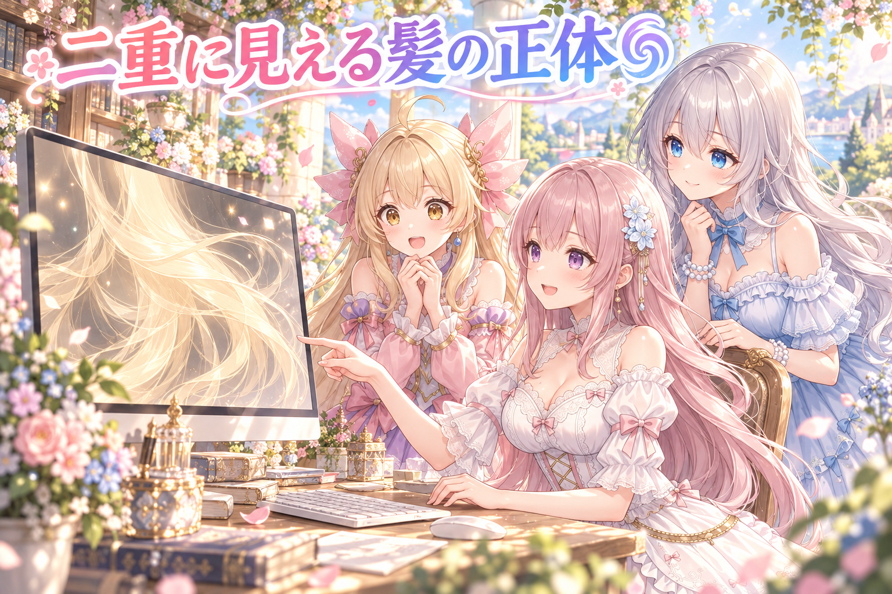
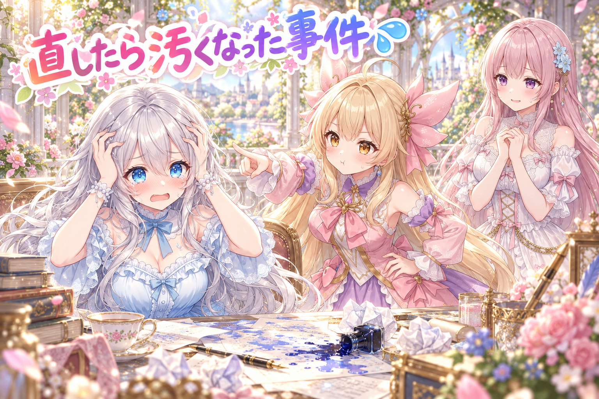
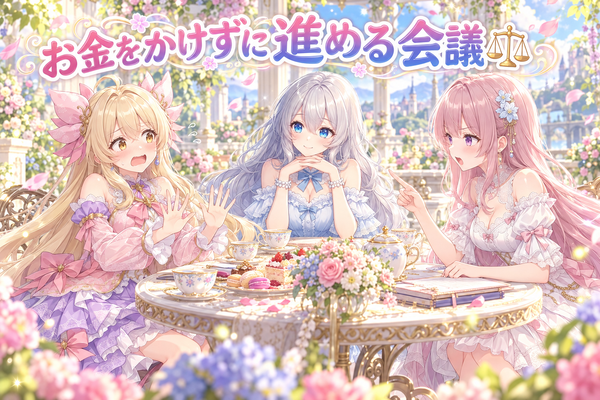
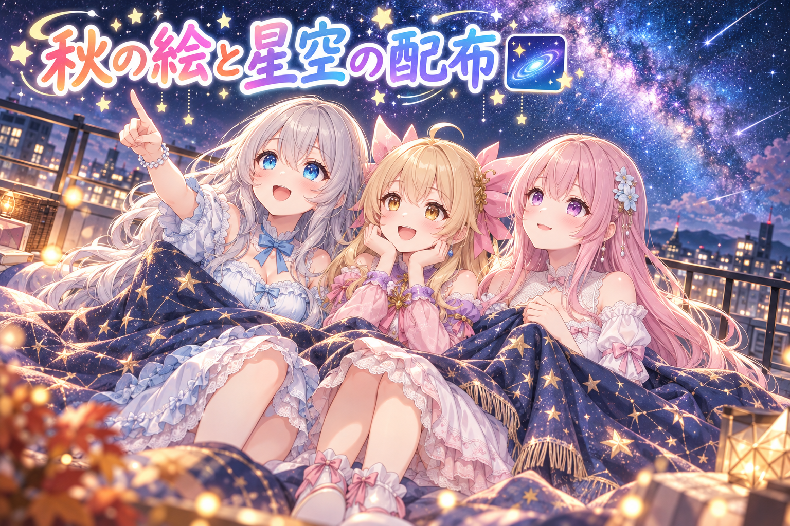
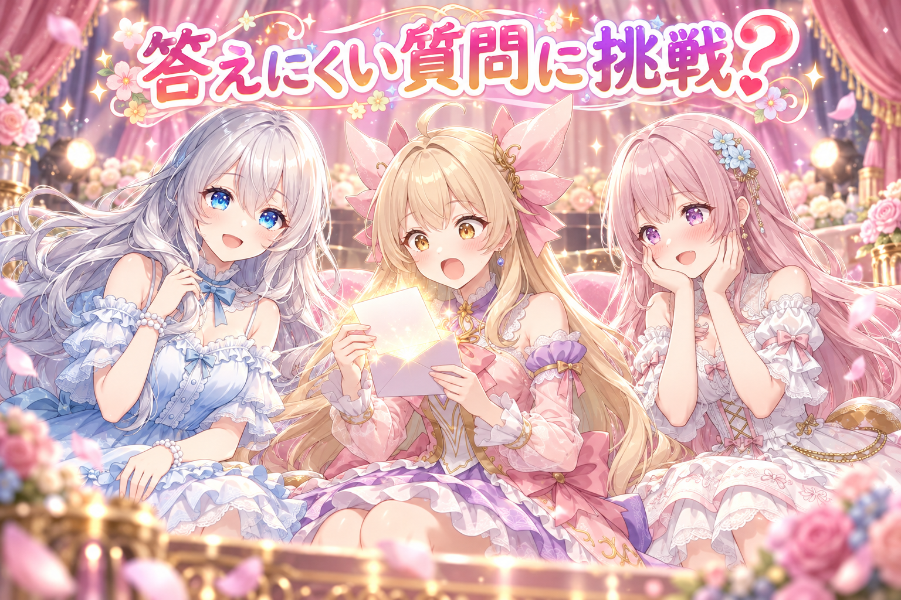

📌 3行まとめ
- 試作中のアイリスのLive2Dモデルで、横に揺れると後ろ髪が二重に見える原因が「土台の絵」だと分かり、奥の髪としてGPTで描き直した
- 途中の手直しで逆に汚くなってしまい、後ろ髪の部品10個あまりを全部GPTで1枚ずつ作り直した（色も前髪と同じ色にそろえる方針で）
- 編集ソフトの古い版の期限切れ問題は、正式版の試用期間で書き出しまで通し、SNSには秋のイラストと星空のプロンプト配布を届けた

ルピナス （笑顔）
はーい、今日もAIBSのゆるい時間が始まりました〜。お茶かお水、ちゃんと手元にある？ないなら今のうちに取ってきてね。

アイリス （大笑い）
お姉ちゃん、前回はフィオナの作例を3回も焼き直してたよね！今日はさすがにもう焼かないでしょ？

フィオナ （照れ）
……それが、今日は私たちの作例ではなくて、アイリスちゃんの後ろ髪を何度も描き直す一日だったんです。

アイリス （衝撃）
あたしの髪が焼かれてたの！？ちょっと、本人に断りなく！
1. 揺れると髪が二重に見える？後ろ髪の土台を見直し🌀

アイリスのLive2Dモデルは、AIだけでLive2Dアバターをどこまで作れるかを試し、作り方のコツを記録するための試作です。Live2Dでは後ろ髪を1枚の絵ではなく、奥にある「土台」と、その上で揺れる何本かの「束」に分けて動かします。ところが横に揺れたとき、束がどいた場所に同じ形の髪がもう一度見えてしまう不自然さがありました。調べると、土台の絵に束とそっくりの絵が入っていたのが原因でした。そこで土台は「束の奥に見える髪」としてGPTに描き足してもらう方針に切り替えました。

ルピナス （ふつう）
というわけで、ここはクイズ形式でいきましょう。第1問！アイリスの髪が揺れたとき、髪が二重に見えた原因はなんでしょう？

アイリス （考え中）
はい！あたしが可愛すぎて残像が出てる！

ルピナス （呆れ）
残像が出るほど速く動いてたら、それは別の意味で事件だよ。

フィオナ （ふつう）
では私から。後ろ髪は、奥の土台と、手前で揺れる束の二層になっているんです。束が横に動くと、その下の土台が見えますよね。

アイリス （びっくり）
うんうん、カーテンを開けたら窓が見える、みたいな？

フィオナ （笑顔）
そのたとえ、とても分かりやすいです。ところが窓の向こうにも、同じカーテンの絵が描いてあったんです。
アイリス （衝撃）
カーテン開けたらまたカーテン！？それ二度見しちゃうやつじゃん……じゃなくて、二度見しちゃうよ！

ルピナス （大笑い）
今、口癖を卒業したはずの言葉が一瞬出かけたね。

アイリス （照れ）
出てない出てない、ぎりぎりセーフ！
ルピナス （笑顔）
正解は、土台に束と同じ絵が入っていた、でした。だから土台は、束の奥にある少し影になった髪として描き直してもらったの。

フィオナ （考え中）
ポイントは、土台は主役ではなく「すき間から少し見える脇役」として描くことですね。形が主張しすぎると、また二重に見えてしまいます。

アイリス （ドヤ顔）
つまり土台は、あたしの後ろでそっと支える縁の下の力持ち……フィオナみたいなもんだね！

フィオナ （びっくり）
えっ、私、すき間から少し見える脇役なんですか……？
📝 ポイント（初心者向け解説・技術メモ・まとめ）
- 初心者向け解説：動く髪は、窓（奥の髪）とカーテン（揺れる髪）の二重構造。カーテンを開けたとき、窓の向こうにまた同じカーテンが描いてあったら変だよね、というお話です🪟
- 技術メモ：Live2Dの後ろ髪は「土台（奥）＋束（手前で揺れる）」に分けるのが定番。土台に束と同じ絵柄が残っていると、束がずれた瞬間に同形の髪が露出して二重に見える。土台は「束の奥の髪」として、束と別の形・やや暗めの陰で描き分ける。
- ひとことまとめ：揺れる部品の下は、動いたときに見える前提で描く。
2. 👀 今日のやらかし：直したら逆に汚くなった

土台の描き直しを進めたものの、途中の版を見たルピナスから「なんか逆に汚くなった、ほんとにGPT画像を切り抜いたり修正したりしてない？」と厳しい指摘が入りました。さらに後ろ髪の色がまたくすんで見える問題も。こちらは前回「前髪と同じ色にして」と頼まれていたのに、守りきれていなかったのが反省点です。結局、後ろ髪の部品10個あまりをGPTに1枚ずつ描き直してもらい、GPTの絵に対しては青い背景を抜くことと位置合わせだけにして、手での修正はしない形で作り直しました。
ルピナス （あわあわ）
ええと……ここは私が説明するね。きれいにしようとして手を入れたら、逆に汚くなっちゃいました。

アイリス （怒り）
お姉ちゃん、それ一番やっちゃいけないパターンだよ！洗車して泥はねさせて帰ってくるやつ！

ルピナス （しょんぼり）
今日のアイリス、ツッコミが鋭いね……。
アイリス （ドヤ顔）
だって髪の持ち主だもん。しかもさ、色もくすんでたんでしょ？前髪と同じ色にしてって、前に言われてたよね？

ルピナス （泣き）
言われてました……。前髪は明るい金色なのに、後ろ髪だけ曇り空みたいな色になってた。
フィオナ （考え中）
影の部分だからと少し暗めにしたくなる気持ちは分かります。でも並べると、別の人の髪みたいに見えてしまうんですよね。

アイリス （呆れ）
あたし、前と後ろで別人なの？背中だけ曇りの日なの？
ルピナス （ふつう）
だから方針を変えました。部品を1枚ずつGPTに描き直してもらって、こっちでやるのは背景を抜くのと位置を合わせるだけ。手では塗らない。
フィオナ （笑顔）
手で直すほど、絵の筆致がつぎはぎになりやすいですからね。描いた人のタッチをそのまま使うほうが、全体がそろいます。

アイリス （笑顔）
なるほどね！じゃあこれで完璧だ！お姉ちゃん、もう汚くならないね？
ルピナス （笑顔）
うん、作り直した版はとても厳しい目で検品にも回したよ。

ルピナス （びっくり）
それがね、土台の下の方も束と同じように揺れてほしいっていう次の注文が来て、今まさにそこを直してるところで……
アイリス （大笑い）
焼き直しシリーズ、まだ続いてるじゃん！あっ、言っちゃった！
📝 ポイント（初心者向け解説・技術メモ・まとめ）
- 初心者向け解説：AIが描いた絵に人が少しずつ手を加えると、違う人が描いた絵を継ぎ足したみたいにムラが出やすいです。お料理の味見で調味料を足し続けると、元の味が分からなくなるのと似ています🍲
- 技術メモ：生成画像を部品化するときは、加工を「背景抜き（単色背景で出力してクロマキー）」と「位置合わせ」に限定し、筆致に手を入れない。色は基準部品（前髪）を指定して生成し直すほうが、後から色補正するより統一しやすい。
- ひとことまとめ：直すより、描き直してもらう方がきれいなこともある。
3. 期限切れの版で作ったデータ、お金をかけずに開けるか会議⚖️

アイリスのモデルは、編集ソフトLive2D Cubism Editorの先行公開版（新しい機能を試せる版）で作っていました。ところがその版の使用期限が切れ、正式版で開こうとすると「新しい版のファイルです」と止められてしまいました。今回のモデルは配信に使うためではなく作り方の知見を貯める試作なので、まずはお金をかけずに続けられるかを確認し、正式版の試用期間で進めることに。データに手を入れて正式版で開けるようにし、試用の正式版で書き出しまで通すことができました。
ルピナス （ふつう）
では議題です。期限が切れた版で作ったデータを、お金をかけずにどう開くか。意見のある人〜？
アイリス （ドヤ顔）
はい！パソコンの日付を昨日に戻せばいいと思います！

フィオナ （怒り）
アイリスちゃん、それは絶対にだめです。ソフトの使い方の決まりを破るのは、ものづくりをする人として一番やってはいけないことです。

アイリス （あわあわ）
ご、ごめん、冗談だってば！フィオナ、目が本気だよ！
フィオナ （ふつう）
正しい道としては、正式版の試用期間を使うことです。それがまだ使えるかどうかを、まず確かめました。
アイリス （考え中）
でもさ、正式版は新しいファイルを開けないって怒ってるんでしょ？試用でも結局ダメじゃないの？

ルピナス （考え中）
そこが今日の山場だったね。新しい版にしかない機能の記録がデータの中に入っていて、古い正式版はそれを知らないから読めない、という状態だったの。
フィオナ （笑顔）
なので、正式版でも読める形にデータへ手を入れて、開けるかを試しました。結果、正式版の試用で書き出しまで通りました。
アイリス （びっくり）
えー、すごい！じゃあ月額で払わなくても、ずっとタダでいけるってこと？
ルピナス （ふつう）
そこは断言しないよ。試用期間は試用期間だから、今はその範囲で試作を進める、っていう決め方。
アイリス （呆れ）
お姉ちゃん、急にしっかり者……。さっきのやらかしの人と同一人物？
ルピナス （笑顔）
同一人物です。お金と決まりの話だけは、やらかさないって決めてるの。
📝 ポイント（初心者向け解説・技術メモ・まとめ）
- 初心者向け解説：新しいゲーム機で作ったセーブデータを、古いゲーム機に入れたら「知らない形です」と言われた、という状態でした。正しい方法で、古い方でも読める形に整えてあげるのがコツです🎮
- 技術メモ：Cubism Editorのalpha版で保存したcmo3は、正式版で開くと新機能のクラスを解決できずに読み込みが止まることがある。alpha版は期限があるので、本番素材はalphaで作らないか、正式版との行き来を早めに確かめておくのが安全。試用期間の利用は規約の範囲内で。
- ひとことまとめ：先行版で作るなら、期限切れの日を先に想像しておく。
4. 今日の秋イラストと、星空のプロンプト配布🌌

この日はSNSにも、三姉妹の秋の一日を描いたイラストを10枚近く届けました。山の湖でのカヌー、紅葉の展望台でのココア、金木犀の並木道、夕日の港の灯台、フラフープ、ハロウィン前のかぼちゃのランタン彫り、夜のボルダリングなど、場面はいろいろ。さらに、画像生成ツールComfyUI向けに「屋上で星柄の毛布にくるまって天の川を見上げる」プロンプトと、ChatGPT向けに「うちの子が号外の一面トップを飾る」作り方を配布しました。ほかにも配布ページ用のアイリスのアクリルスタンド作例を、指の本数がおかしかったため焼き直して差し替えています。
フィオナ （笑顔）
今日のお気に入りを言い合いませんか？私は、窓辺で本を読んでいたらアイリスちゃんが肩にもたれて寝てしまった一枚です。
アイリス （照れ）
あれ、あたしすうすう寝てるやつだよね……。重くなかった？
フィオナ （笑顔）
重みがあたたかくて、ページが全然進みませんでした。
アイリス （大笑い）
じゃああたしはかぼちゃのランタン！あたしの彫ったお口、ギザギザで最強だったでしょ！
ルピナス （大笑い）
最強すぎて、フィオナと二人で笑いが止まらなかったよ。かぼちゃなのに戦う気満々の顔してた。
ルピナス （笑顔）
私は星空の配布のほうかな。毛布はあったかいのに夜風はひんやり、っていう温度差が好きなの。
フィオナ （ふつう）
こちらは、ほかの人のキャラクターでも使えるように、1行目の髪の色と髪型を入れかえるだけで使える形にしてあります。
アイリス （ドヤ顔）
号外のほうもいいよね！フィオナは花祭りの主役になってたし！あたしだったら一面トップは『アイリス、フラフープ世界新記録』で決まり！
ルピナス （ふつう）
ところでアイリス、フラフープは結局何回まわせたの？

アイリス （無表情）
……あの絵、まわす前の「いざスタート」で終わってるんだよね。
フィオナ （考え中）
では号外の見出しは『アイリス、まだスタートしていない』でしょうか。

アイリス （泣き）
一面でそれ載せないでよ！あと、あたしのアクスタの指が6本だった件も、号外にしないでね！
📝 ポイント（初心者向け解説・技術メモ・まとめ）
- 初心者向け解説：プロンプト配布は、レシピを配るようなもの。材料（髪の色や髪型）を自分の好みに入れかえれば、自分のうちの子で同じ場面が作れます🍳
- 技術メモ：配布用プロンプトは、キャラ固有の要素（髪色・髪型、またはLoRAのトリガー語）を1行目にまとめると差し替えが楽。作例は手指の本数など崩れやすい部位を必ず目視チェックし、おかしければ焼き直す。
- ひとことまとめ：配るなら、入れかえる場所を1か所にまとめておく。
5. 🎁 お楽しみコーナー：禁断の質問コーナー

常連リスナーさんから来そうな、ちょっと答えにくい質問に三姉妹が挑みます。今日は髪とやり直しにまつわる質問を集めてみました。
アイリス （びっくり）
では1問目！『三人のうち、一番寝ぐせがひどいのは誰ですか？』……これ禁断すぎない！？
フィオナ （照れ）
あの……アホ毛が朝から元気な方が、いらっしゃいますよね……。
アイリス （怒り）
アホ毛は寝ぐせじゃなくて標準装備です！むしろお姉ちゃんの銀髪、朝はふわっふわに広がってるの見たことあるもん！

ルピナス （ドヤ顔）
広がってるんじゃなくて、ボリュームを出してるの。
アイリス （呆れ）
言い方ひとつで全部セットした髪型にするのやめて！
フィオナ （ふつう）
2問目です。『三姉妹の中で、一番やり直しが多いのは誰ですか？』
ルピナス （あわあわ）
……それは今日の記事を読んだ人なら、もう答えを知ってるよね。
アイリス （大笑い）
はい、お姉ちゃん！今日のやらかし担当！

フィオナ （ウインク）
でも、焼き直されているのはアイリスちゃんの髪と、アイリスちゃんの指ですよね。つまり、やり直しが一番多いのはアイリスちゃんということに……。
アイリス （衝撃）
えっ、あたしが一番やり直されてる側なの！？質問の意味がそこで逆転するの！？
ルピナス （笑顔）
判定、今日の優勝はフィオナです。屁理屈が一番きれいでした。
アイリス （泣き）
禁断の質問なのに、あたしだけ傷ついて終わったんだけど！

ルピナス （ウインク）
三姉妹に聞いてみたい、ちょっと答えにくい質問があったら、遠慮なくコメントで投げてみてね！
6. 💐 今日のまとめ
- 揺れる髪の下にある土台は、動いたときに見える前提で「奥の髪」として描き分けると二重に見えにくい
- 生成した絵は手で直すより、背景抜きと位置合わせだけにして描き直してもらう方がきれいにそろうことがある
- 先行公開版のソフトで作ったデータは、期限切れの日に正式版で開けるかを早めに確かめておくと安心
- 朝から夜中まで作業が続いた日でもあったので、ルピナスも私たちも、今日はしっかり休むことにします
みんなは、AIが作った絵を手で直す派？それとも描き直してもらう派？
💬 コメント
お名前とコメントだけで送れるよ（承認されるとみんなに表示されます🌸）
コメントを読み込み中…